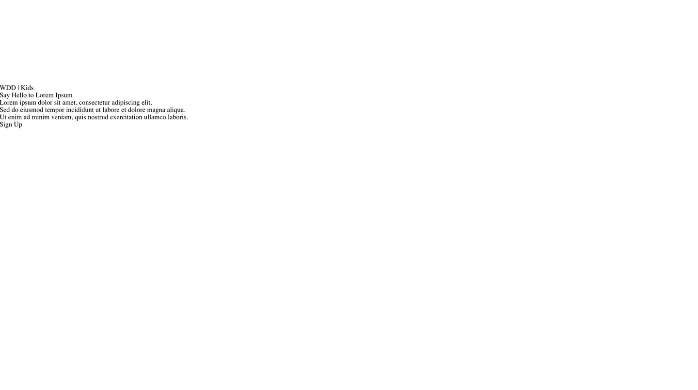
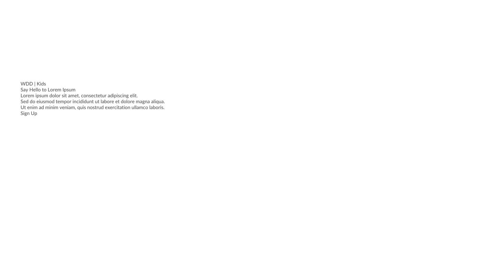
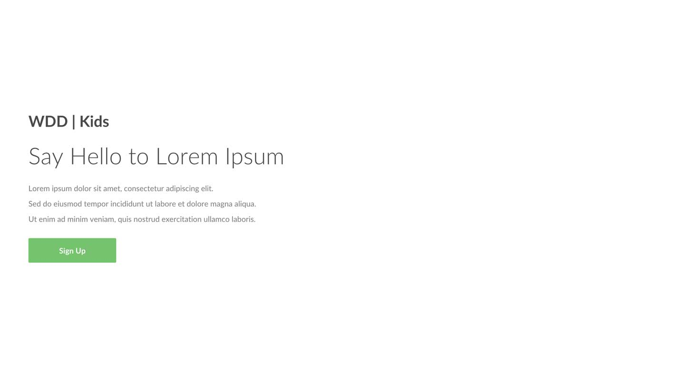
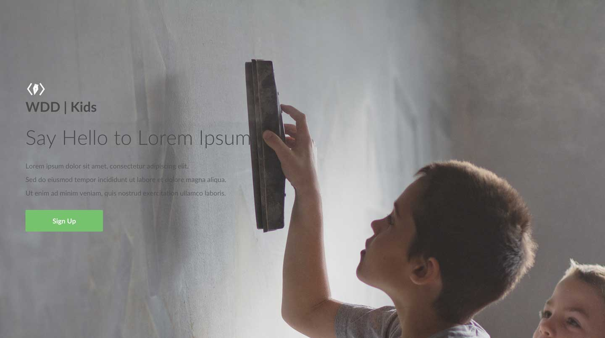
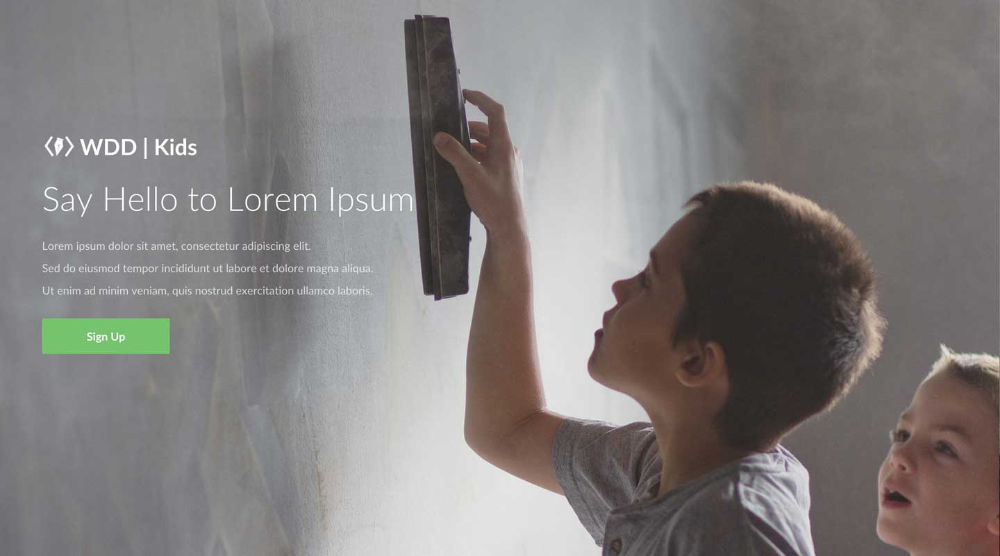
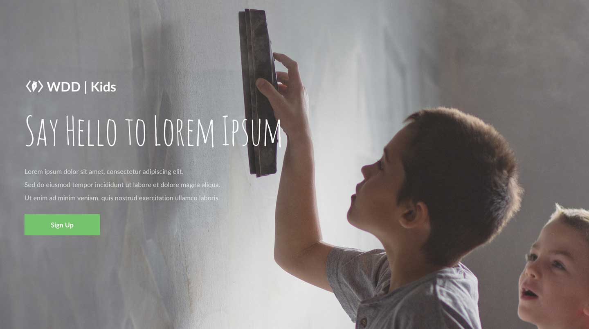

In today's hands-on, we will be creating our very own landing page. In its most basic sense, a landing page is any page that a webpage visitor arrives at or "lands on" when he or she first visits a website. Although there are many different kinds of landing pages, they share a unified purpose, and that is to grab the user's attention towards a particular cause or action. Take a look at some of examples of good landing pages:
The key to crafting a successful landing page is to capture the user's attention by appealing to the user's emotion. Some times, design is more than just organizing the information in an optimal way. It's about moving the user's emotions, and typography & images play a pivotal role in this.
Let's get started. Make sure you make all the changes in the right files (i.e not to the files in the instructions folder)! Ask a TA for help.
Your page should look something like this:

Google Fonts is an excellent free resource to use if you're interested in importing new fonts to replace the ugly, standard fonts such as Times New Roman. For this hands-on, we want to import a font called Lato. To do so:
- Search "Lato" in the top right search bar.
- Select the font by clicking on the "+" button
- You should now see in the black bar at the bottom of the page that you have "1 Family Selected." Click on that bar, and it should expand upwards.
- Click on the "Customize" tab and select the following font weights:
- light 300
- regular 400
- bold 700
- Now click on the "Embed" tab, and you should see a code block of the format "< link href...>" It should also contain "Lato: 300, 400, 700", indicating the font styles you've chosen. Copy and paste this code into the head tag of your HTML file.
At this point, you have successfully imported the Lato font to your HTML. However, you will notice that the font on our page has not changed. This is because we have not yet specified in our CSS that we want to apply this font. Let's make the following changes to our #container div so that we are using the Lato font, and to give it some inner spacing so that it's not touching the edge of the screen:
- For #container div, apply the following CSS attributes:
font-family: 'Lato';
padding: 60px;
color: #4a4a4a;
Your page should now look something like this:

Right now, all of the information in our web site is in a same order of hierarchy because it's all in same size, same weight, and same font. Let's make some adjustments to the typography before we go any further. Some times, a few adjustments in font-size and font-weight is enough to make the website beautiful.
- We want to make the heading larger so that it stands out as a title. It will also look nicer in a lighter font weight.
Apply the following CSS attributes to the #heading div:
font-size: 48px;
font-weight: 300;
margin: 24px 0px;
- We want the description to be smaller than the heading, but still large enough to be easily read. We also want to add some more spacing between each line for better readability.
Apply the following CSS attributes to the #description div:
font-size: 16px;
line-height: 2;
opacity: 0.72;
margin-bottom: 24px;
- To make the title stand out as well, apply the following CSS attributes to the #title-caption div:
font-size: 32px;
font-weight: 700;
- We want to make the "Sign up"(otherwise known as a website's "call-to action") really stand out as a button. Apply the following CSS attributes to the #action div:
background: #78c272;
color: white;
padding: 16px 64px;
border-radius: 2px;
display: inline-block;
font-size: 16px;
font-weight: 700;

As you apply the CSS attributes, try to have experiments on your own on the CSS values so that you understand how each of them work!
So far, you can take this same design, just replace the text, and can call it any website and it will still work. That is, the design is not specific to our topic of WDD | Kids. How can we make this website feel more like it's catered for kids' education? To do this, we will use an image that resembles kids' education and that strikes to the user's emotion.
First, uncomment the #background div, which contains the image that we will use.
After this step, your page should look like this:

You will see that there are a couple of things that are off:
1. Background extends outside of the page, making the page scrollable.
2. The logo and the title is misaligned.
3. The color of the text is black and the image is quite dark, making the text hard to see.
Let's fix these one by one:
-
First, we want to ensure that the background is contained within the page's width and height. Apply the following CSS attributes to the #background div:
display: block;
width: 100%;
height: 100%;
overflow: hidden;
-
You will learn about CSS floats in depth in next week's programming lecture. It is used frequently to horizontally align elements. We will use it to align the title logo and caption. Apply the following CSS attribute to BOTH the #title-logo div:
float: left;
And apply the same CSS attribute to the #title-caption div:
float: left;
-
We also want to change the color of the text within the #container div so that it's more legible. Let's make it white to establish a greater contrast between the text and the background image.
Apply the following CSS attribute to the #container div:
color: white;
Your page should now look like this:

The landing page is starting to come together! Now, for the finishing touch, let's maximize our emotional appeal by using a unique font for the title. We want to make the title look as if it was handwritten by the kids. As such, find a font called "Amatic SC" from Google Fonts and add it to the HTML. (Refer to the very beginning if you are having trouble! It should be a very similar workflow.) We are going to use this font with some adjustments in the font-size (Amatic SC font is by default, quite small. We need to make it bigger to have it as the same size as Lato in 48px.):
- Apply the following CSS attributes to the #heading div:
font-family: 'Amatic SC';
font-size: 96px;
Your landing page is done! It should look like this:

If you have time, try to experiment more with different fonts and images. For example, what do you think of the design when you...
- Make the text center justified?
- Get rid of the WDD | Kids title?
- Change the font (Try "Crafty Girls")